Your vision, brought to life.
Video Photography
Cinematic visuals for brands, events, reels, and standout creative campaigns.
Branded visuals, event coverage, social reels, and polished edits built with neon atmosphere, sharp storytelling, and clean composition.
My perspective didn’t come from one place - it came from living in many. Different countries, different struggles, different versions of life.
That’s what shaped the way I create. I notice things others overlook - emotion, tension, authenticity.
To me, a video isn’t just visuals. It’s a feeling you can’t fake.
Now I’m building something real in the U.S. Turning what started as a childhood passion into a career.
I create for people, brands, and moments that actually mean something. Because I know what it’s like to start from nothing, to rebuild, to chase something bigger.
And that’s the energy I bring into every frame.
Selected Work
Every frame is built to hold attention before the scroll moves on.
Photo Portfolio
Still images with the same glow, depth, and mood as the motion work.
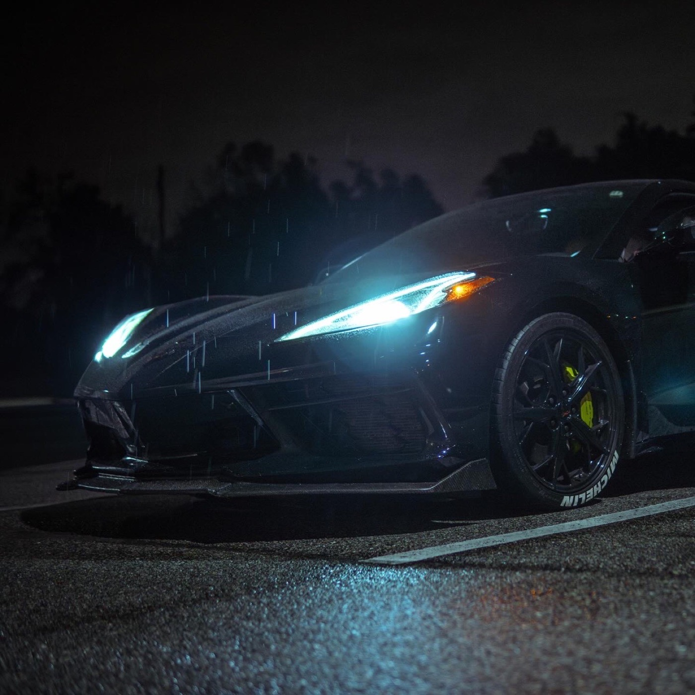
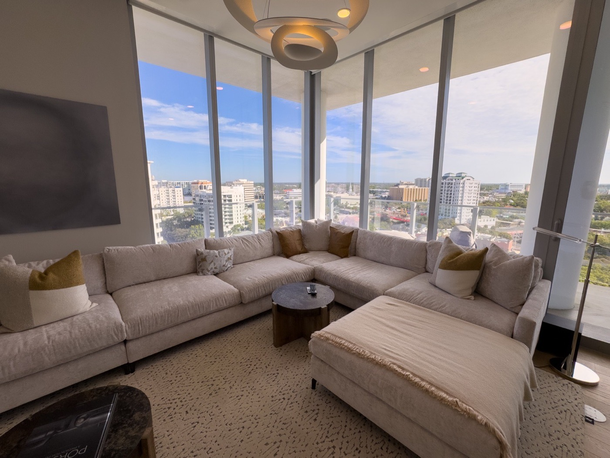
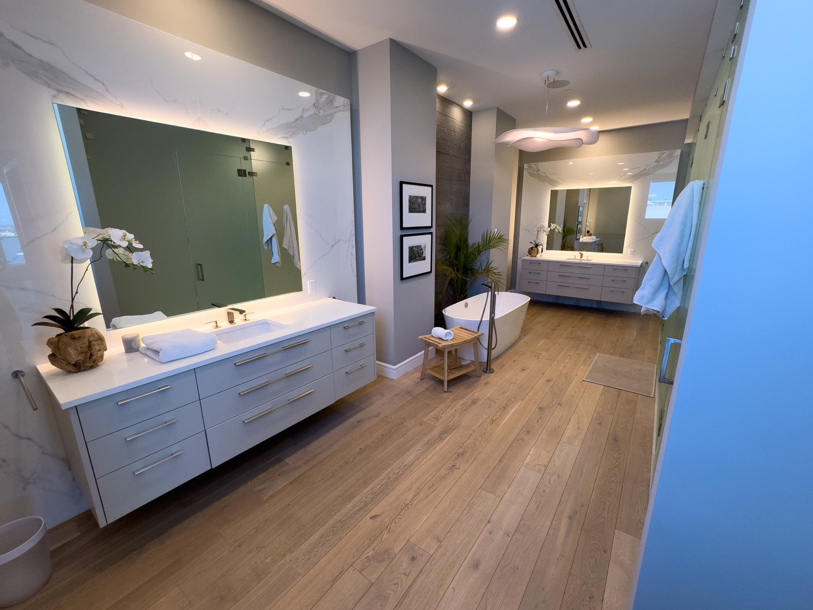
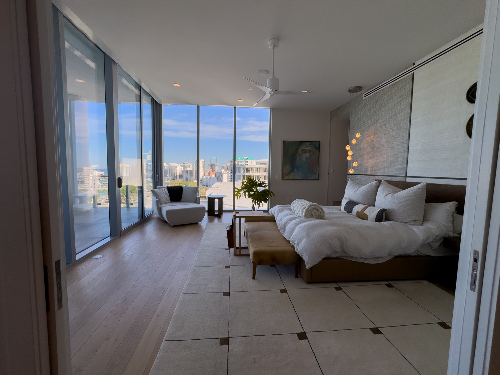
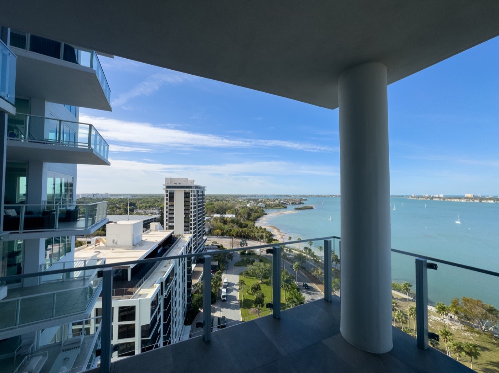
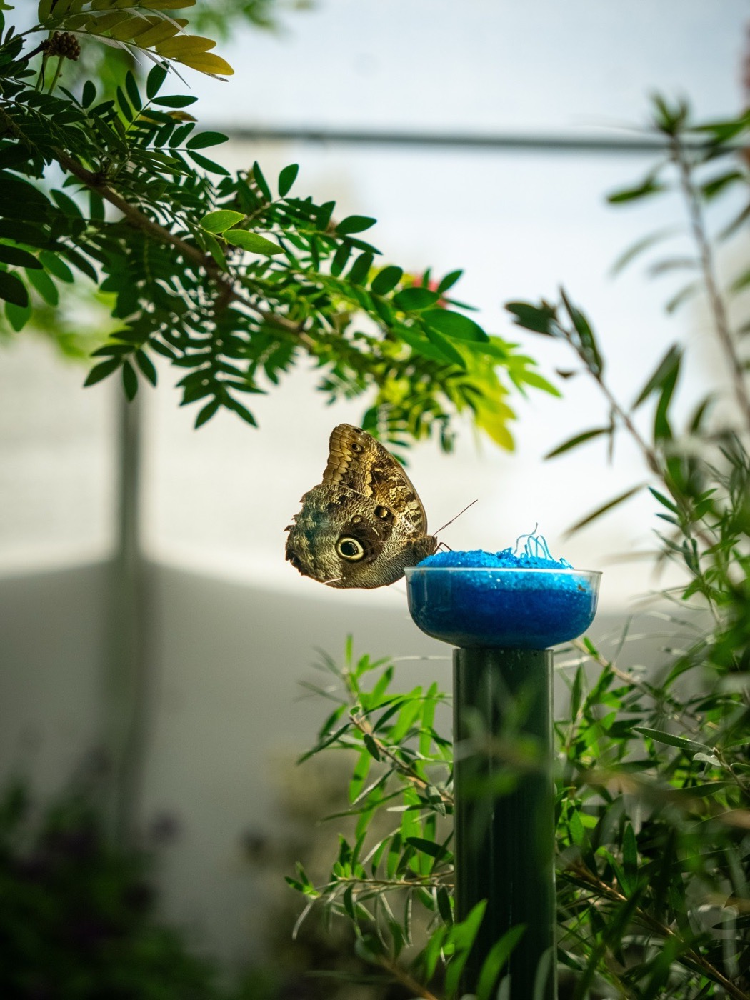
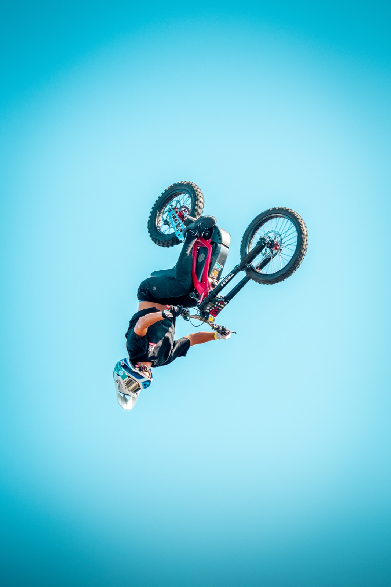
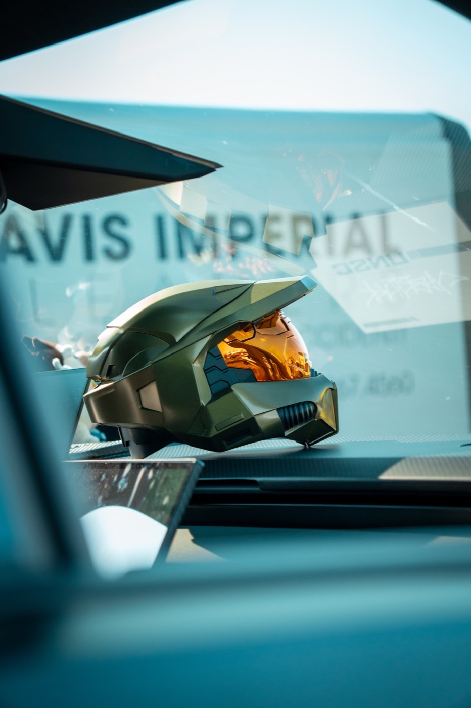
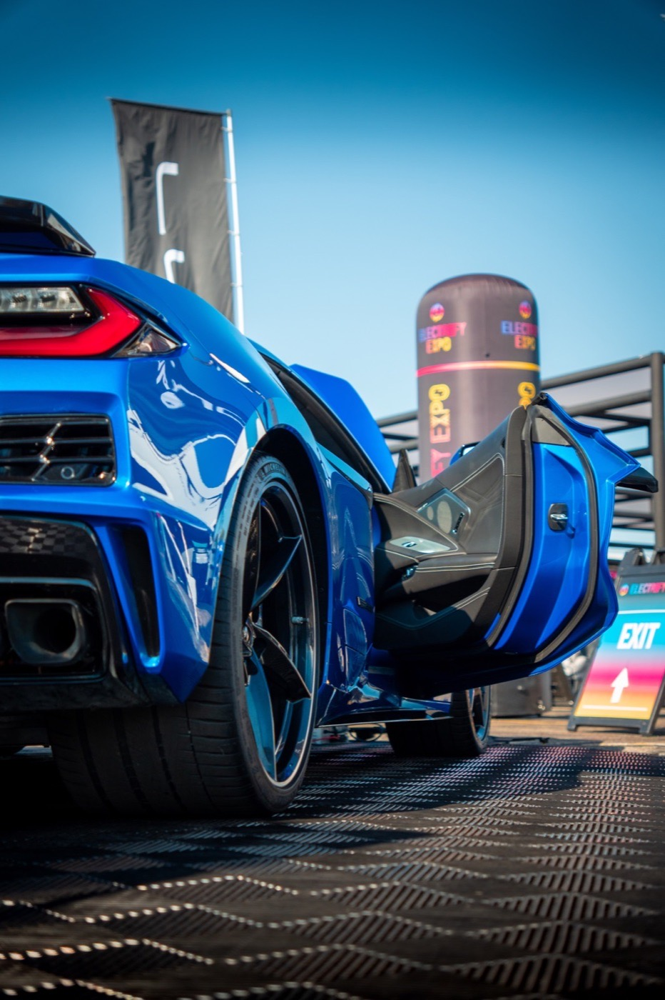
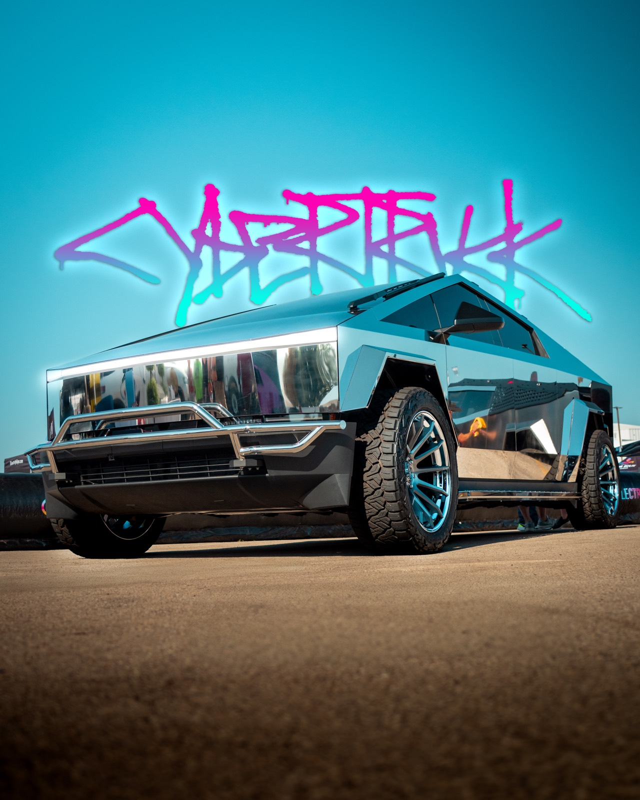
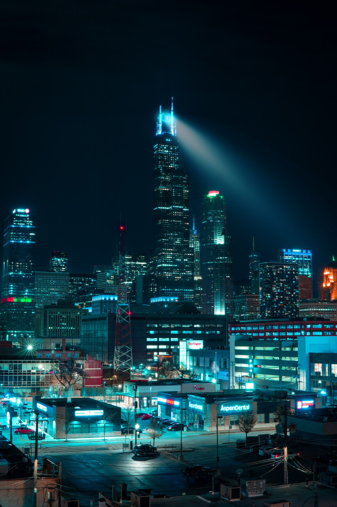
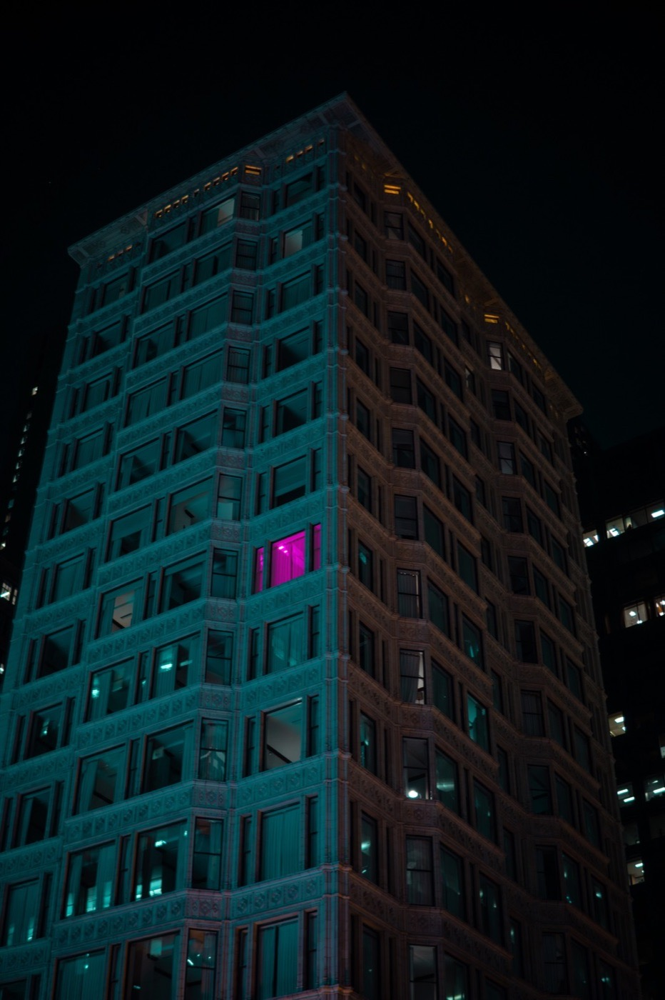
Contact
Ready to shoot something unforgettable?
Send a quick project brief and the form will open your email app with everything filled in for you.
Promo videos, event coverage, reels, branded visuals, photo sets, edits.